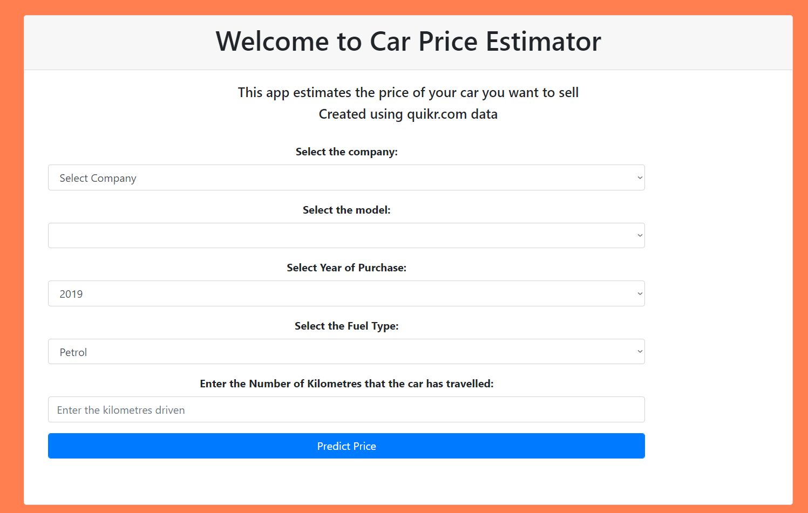
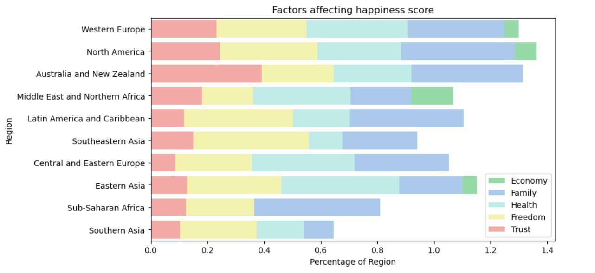
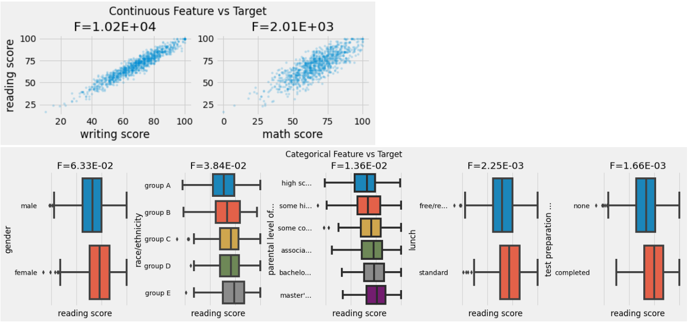
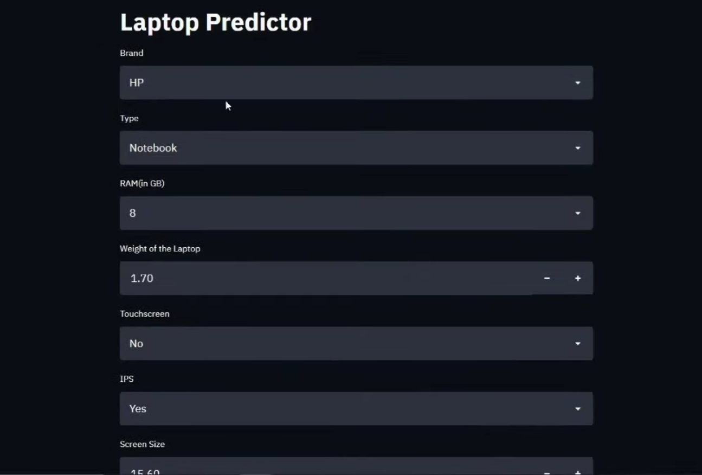
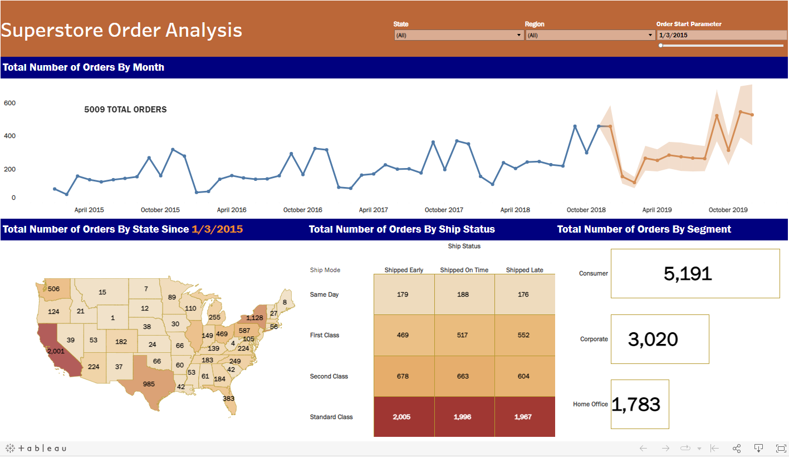

About Me
I am a second year student of statistics at Hacettepe University. I have been working on programming since 2019. I have worked on many programming languages. However, I decided that the most suitable programming language for me was Python. Since then I have been working with the fields of Data Science and Machine Learning. I am currently trying to learn Pytorch and develop Deep learning projects. Besides, I am looking for an internship related to Data.

In this project, I helped someone who wanted to sell their car find the ideal value for their car. I cleaned and analyzed the raw dataset using Python. I built a Linear Regression Model with an R2 score of 0.92 with a clean dataset.
World Happiness Report EDA

In this project, I examined the happiness scores of countries and the factors affecting happiness from 2015 to 2019. In line with the analyzes I made, I observed what the increases or decreases in the happiness scores of countries depend on and how they can be resolved.
Student Performance Analysis

In this project, I examined what factors the students performance in their lessons depend on and how these factors affect their performance with Machine Learning techniques.

In this project, you can find out how much is the average price of a laptop with the features you want. I cleaned the dataset to find the best price and got the best results by trying more than twelve machine learning models. I made the project a website with Streamlit so that everyone can easily access it.
Superstore Order Analysis

In this project, I analyzed the order data of a supermarket chain and turned it into a dashboard using Tableau. I analyzed the dataset with SQL and cleaned it with Python. I have prepared a dynamic dashboard that shows the sales amounts that you can see for all days between 2015-2018 according to the cities where the orders are distributed, ship, status and segments.